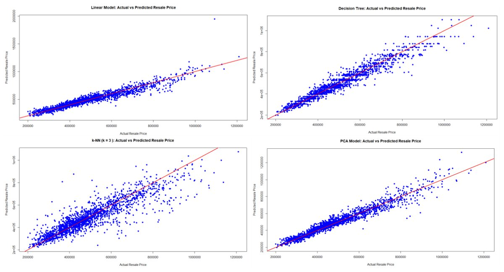

Predicting HDB Resale Prices with Machine Learning
Comparing linear regression, decision trees, k-NN and principal component regression to predict HDB resale prices.
- My role
- Individual project
- Team
- Individual (DSE1101, NUS)
- When
- Nov 2024
Overview
Buyers and sellers make better decisions when they understand what drives HDB resale prices. Working with a dataset of flat characteristics, I reduced 230 candidate predictors to 133, then built and compared four predictive models, judging them by RMSE and by margin of error against the mean price of about $497,000.
The process at a glance
-
Data
- HDB flat characteristics
- 230 → 133 predictors
- 4,000 / 2,000 train-test split
-
Prepare
- Log-transform price
- Drop zero-variance features
-
Models
- Linear (forward selection)
- Decision tree
- k-NN
- PCA → PCR
-
Validate
- 10-fold cross-validation
- Tune cp, k and components
-
Evaluate
- RMSE in dollars
- Margin of error vs mean price
What I did
- Log-transformed the right-skewed resale price to stabilise variance and reduce the pull of extreme values.
- Used a 4,000 / 2,000 train-test split and 10-fold cross-validation for every model.
- Built a linear model with forward selection (91 predictors), a decision tree tuned on its complexity parameter, and k-NN tuned on k.
- Applied PCA to keep 95% of the variance, cutting 133 predictors to 69 components, then fitted a principal component regression.
Results & conclusions
- Principal component regression was the most accurate: RMSE $40,092, an 8.06% margin of error
- Beat linear regression (10.34%), the decision tree (11.07%) and k-NN (15.12%)
| Model | Key setting | RMSE | Margin of error |
|---|---|---|---|
| Linear regression | Forward selection, 91 predictors | $51,451 | 10.34% |
| Decision tree | cp = 0.00011, 226 leaves | $55,071 | 11.07% |
| k-NN | k = 3 | $75,196 | 15.12% |
| Principal component regression | 69 components (95% of variance) | $40,092 | 8.06% |
Margin of error = RMSE ÷ mean resale price ($497,486).
Conclusion
Principal component regression was the clear winner: by compressing 133 overlapping predictors into 69 components, it removed noise and produced the tightest predictions, with most points close to the perfect-prediction line. Linear regression and the decision tree performed similarly (10–11% error), while k-NN struggled with so many features. The remaining error suggests that economic factors outside the dataset matter too, such as housing grants like the 2019 Enhanced CPF Housing Grant.


What I learnt
This was my first full machine learning project. I learnt the core workflow: split the data first, validate with cross-validation, tune each model's key setting and compare on a held-out test set using a metric people understand (RMSE in dollars). Cutting 133 predictors to 69 components showed me how much redundancy real data carries, and k-NN's weak result showed how some methods break down with many features. I also made, and caught, a classic mistake: accidentally leaving the price inside the training features. Now I check for data leakage every time.